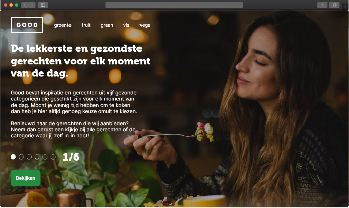
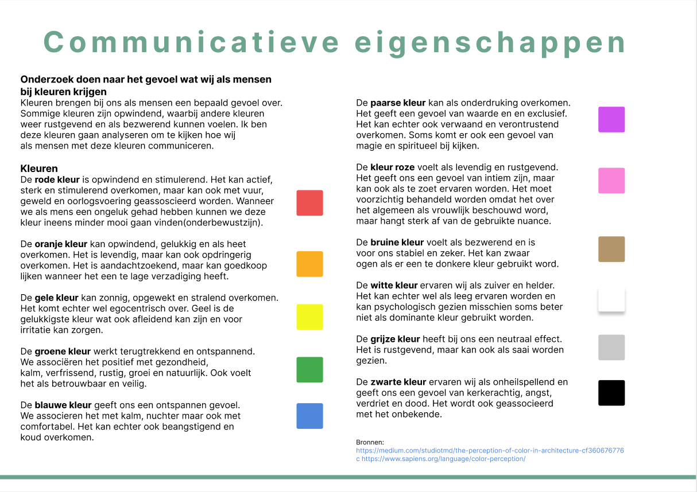
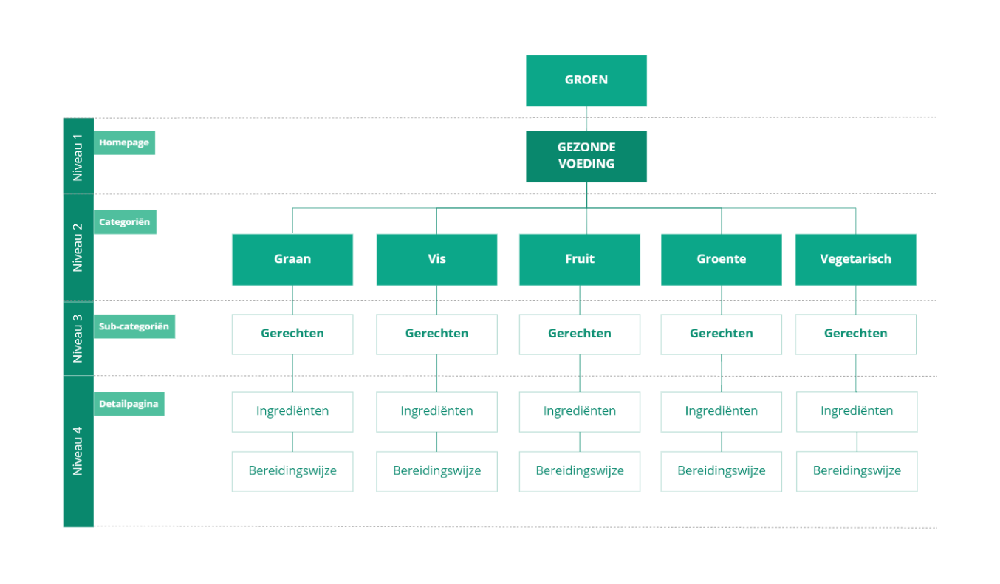
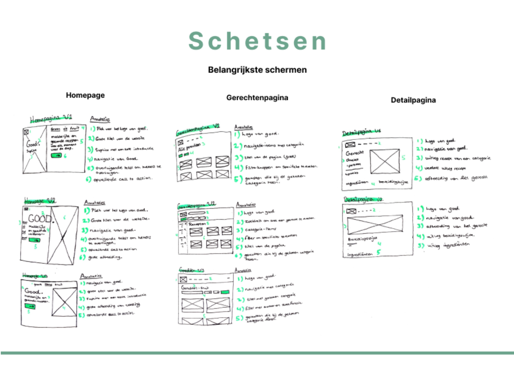
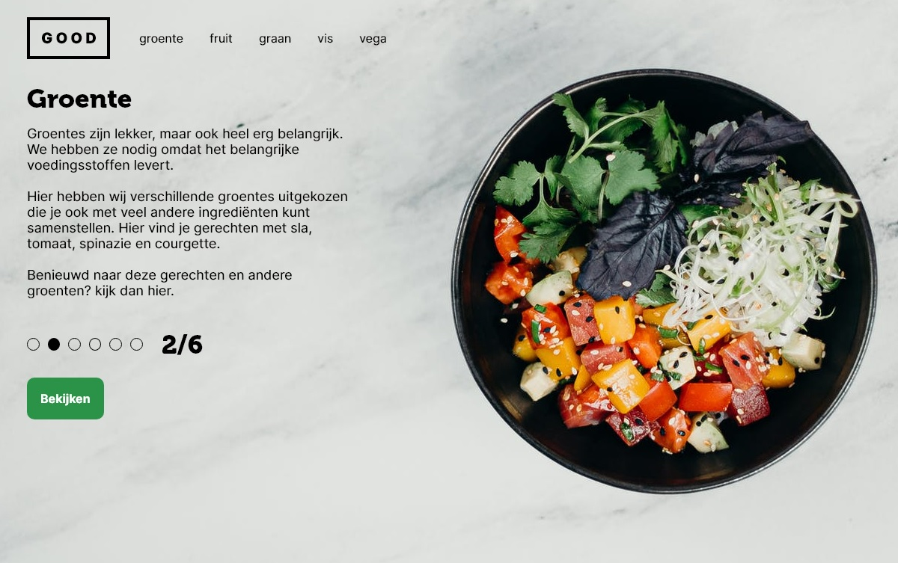
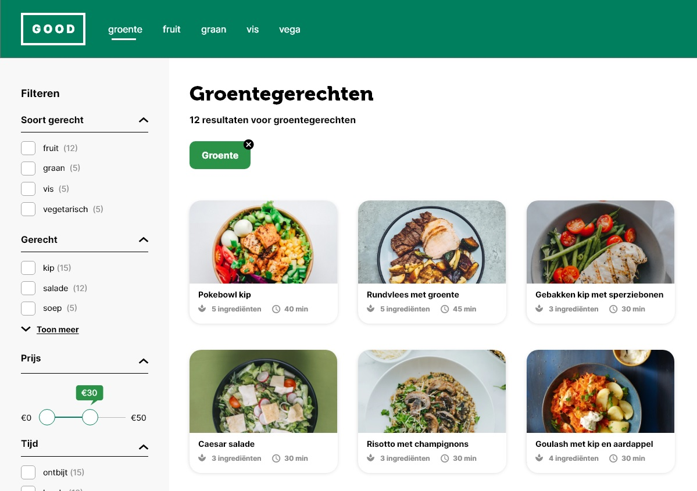
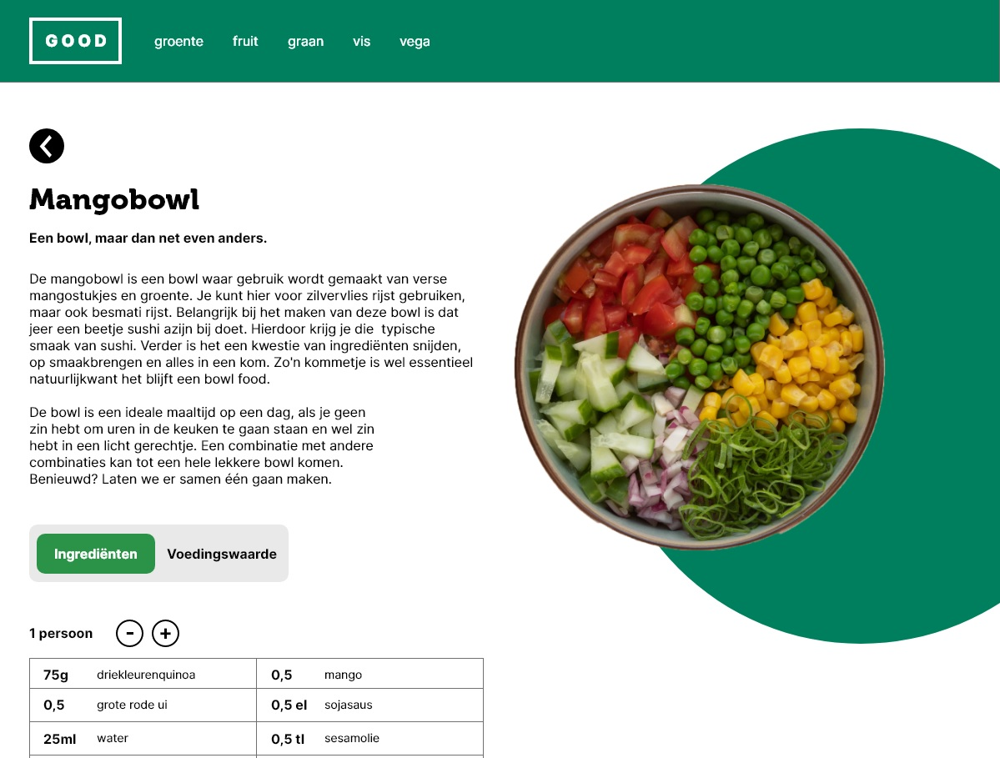

Webdesign Good
Voor het vak grid en kleur heb ik de opdracht gekregen om een nieuwe website voor een onderwerp naar keuze te maken. We moesten hierbij rekeningen houden met consistentie, gridgebruik en visuele hiërarchie. Ik heb in dit project voor het onderwerp gezonde voeding gekozen. Ik heb voor dit onderwerp gekozen omdat ik gezonde voeding belangrijk vind en ik mensen op deze manier kan inspireren om ook vaker gezonde recepten te maken.

Doel van mijn website
“Het doel van Good is om gebruikers inspiratie te geven voor gezonde voeding. Daarbij heeft good bewust voor gerechten uit de schijf van vijf gekozen om gebruikers op een gezonde en goede manier de dag door te helpen.”
Voorbereidingen ontwerpen
Het onderwerp voor mijn website is gezonde voeding. Hierdoor heb ik zelf moeten nadenken over de kleuren die ik wilde gaan gebruiken voor mijn website.
Kleuren brengen bij ons als mensen een bepaald gevoel over. Sommige kleuren zijn opwindend, waarbij andere kleuren weer rustgevend en als bezwerend kunnen voelen. Ik ben deze kleuren gaan analyseren om te kijken hoe wij als mensen met deze kleuren communiceren en welke kleuren het beste bij een website voor gezonde voeding passen.
Uit mijn onderzoek heb ik gezien dat wij als mensen groen het meeste associëren met gezondheid, groei en natuurlijk. Ik associeer groen zelf ook met gezondheid waardoor ik de kleur groen wil gaan gebruiken voor het ontwerp. Daarbij moet ik wel een geschikt kleurpallet kiezen. Ik heb er voor gekozen om analoge kleuren te gebruiken. Dit zijn kleuren die naast elkaar op het kleurenwiel staan waarbij er één hoofdkleur is die ondersteund worden door de andere kleuren. Ik heb een donkergroene kleur als hoofdkleur gekozen met een aantal lichtere kleuren groen voor visuele ondersteuning.

Indeling pagina's
Nadat ik de kleuren heb bepaald ben ik gaan kijken naar de pagina's die ik wil gaan ontwerpen voor mijn website. Ik heb daarbij een sitemap gemaakt met categoriën, subcategoriën en een detailpagina. Deze pagina's moest ik laten terugkomen omdat deze ook in de randvoorwaarden stonden. De sitemap ziet er als volgt uit:

Schetsen en ontwerpprincpes
Ik heb een keuze gemaakt in de pagina's die ik wil gaan gebruiken. De volgende stap is het schetsen van deze pagina's waarbij ik gebruik maak van de principes voor user interface design. De principes waarmee ik werk: One primary action per screen, Consistency matters, Strong visual hierarchies works best, Progressive discloser en de Zero state. Deze licht ik ook graag mondeling toe tijdens een demonstratie.

Ontwerpkeuzes onderbouwen
Na mijn schetsen ben ik gaan ontwerpen. In de ontwerpen heb ik consistentie aangehouden door buiten de homepage voor elk scherm een 4 koloms grid te gebruiken. Ik heb daar voor gekozen omdat ik zo alle elementen voor de recepten dezelfde grootte heb kunnen geven. Door deze recepten dicht bij elkaar te zetten weten gebruikers dat deze recepten bij elkaar horen. Daarnaast heb ik alle knoppen dezelfde vorm en kleur gegeven, zodat de gebruiker weet wat de knoppen op de website zijn. Om de visuele hiërarchie te kunnen bereiken ben ben ik aan de slag gegaan met de grootte van teksten en witruimte. Door een goede visuele hiërarchie te geven kan ik een duidelijke kijkvolgorde aanwijzen. Titels zijn groter dan de broodtekst, zodat het meer opvalt voor de gebruiker en zo meer de aandacht trekt. Om de acties zo makkelijk mogelijk te houden maak ik gebruik van progressive discloser. De gebruiker kan namelijk doormiddel van de filter zijn zoekopdracht specificeren om bij zijn subcategorie te komen. Daar kan hij een keuze maken om vervolgens naar de detailpagina te zijn. Zo gaan de acties stap voor stap.


